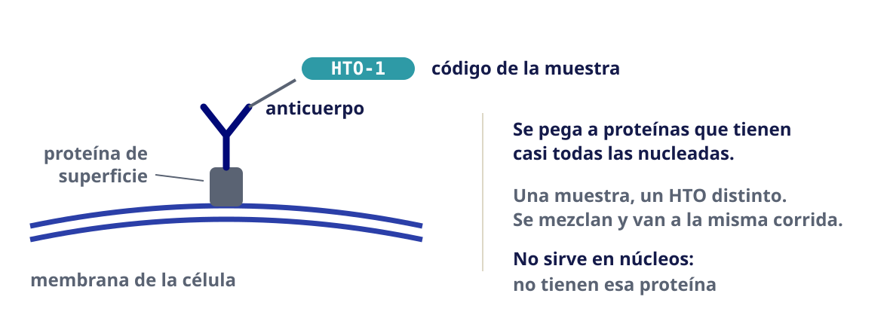
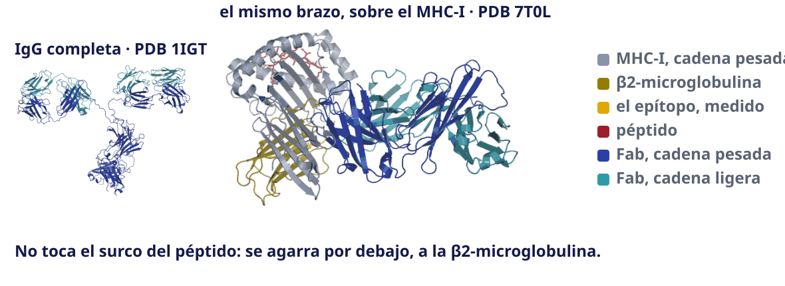
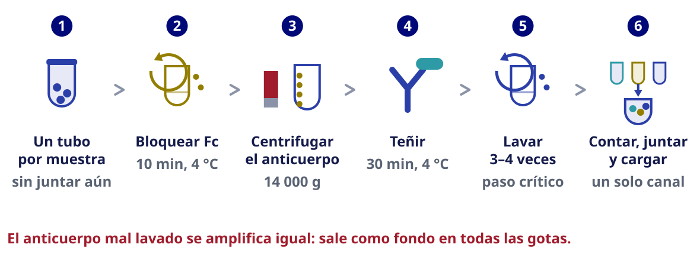
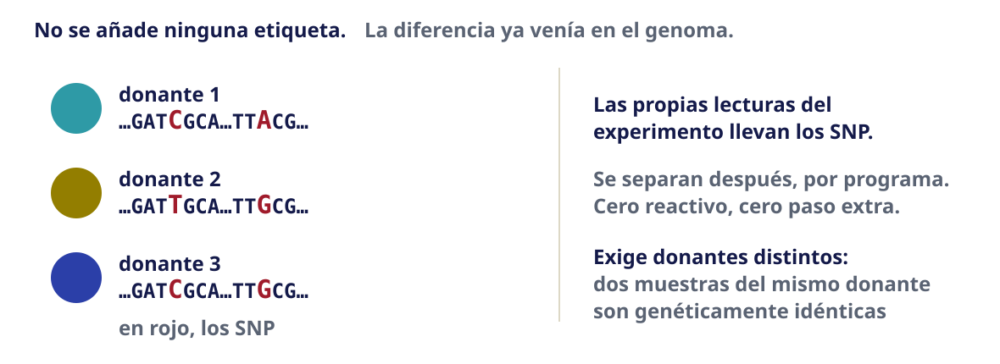
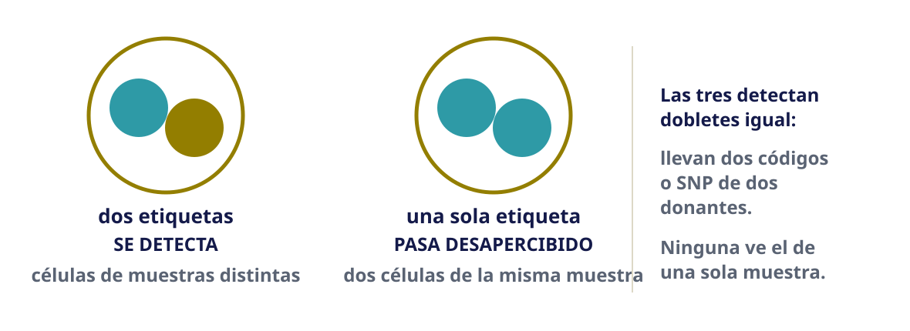

Sesión 02 · Jueves 20 de agosto de 2026
Diseño experimental
Bioinformática y Estadística 3 · Licenciatura en Ciencias Genómicas
ENES Juriquilla, UNAM · Semestre 2027-1
Yalbi Itzel Balderas Martínez (90 min)
Luis Alberto Meza Cova (30 min)
Laboratorio de Biología Computacional · INER

Antes de empezar
Objetivo de la sesión
Diseñar un experimento de célula única que permita separar el efecto biológico del efecto técnico, aplicando los conceptos de réplica biológica, unidad de análisis, confusión entre variables y potencia estadística; y reconocer los diseños en los que ninguna corrección posterior puede rescatar el experimento.
Cómo está armada
Sesión teórico-práctica de 120 minutos.
- Se abre cerrando la actividad del martes: la plenaria de los tres escenarios
- 6 bloques de trabajo, con descansos entre ellos
- Se alterna explicación y trabajo propio
El caso que abre la sesión
Importante
Caso de aplicación: el estudio que no se pudo salvar: un diseño en el que todos los casos se procesaron en una corrida y todos los controles en otra. El efecto de lote y el efecto de enfermedad son matemáticamente indistinguibles: no existe método de corrección que los separe, porque no hay ninguna observación que comparta lote y difiera en condición. Es el ejemplo más útil del curso porque demuestra que hay errores que el análisis no arregla, y que el momento de evitarlos es antes de secuenciar. Este mismo conjunto de datos es el que se retoma el 15 de septiembre para trabajar efecto de lote, de modo que los estudiantes comprueban en la práctica lo que predijeron en agosto.
Desarrollo
Lo que quedó pendiente del martes
La actividad de los tres escenarios se quedó sin plenaria. Cada equipo llega hoy con su tabla llena en su marco del tablero.
| Orden | Escenario |
|---|---|
| 1.º | escenario A · biopsia congelada de tumor |
| 2.º | escenario C · organoide de ~400 células |
| 3.º | escenario B · sangre fresca, 12 donantes |
Nota
Quién abre cada escenario se sortea en el momento. Quien abre dice su elección y qué pierde con ella. Los demás solo añaden lo que sea distinto: no se repite lo ya dicho.
Los tres escenarios, cerrados
| Escenario | Qué mandaba | La elección |
|---|---|---|
| A · biopsia congelada de tumor | está congelado: la membrana no sobrevive | núcleos aislados, en gota |
| C · organoide de ~400 células | con 400 células el costo por célula deja de mandar | placa, longitud completa: manda la sensibilidad |
| B · sangre fresca, 12 donantes | fresco y con muchas muestras | 10x 3′ —o 5′ si además quieren repertorio inmune— |
Advertencia
El escenario B queda abierto: falta una decisión que nadie tomó todavía.
🗺️ Dónde vamos · bloque 1 de 4
| La pregunta que contesta | Con esto se diagnostica… | |
|---|---|---|
| ▶ 1 | ¿Qué más varía, además de mi condición? | el diseño confundido |
| 2 | ¿Quién es mi n? |
la muestra única |
| 3 | ¿Qué pasa si me equivoco de n? |
las células tratadas como réplicas |
| 4 | ¿Alcanza para ver lo que busco? | la población demasiado rara |
Un estudio que no se puede rescatar
El escenario B que acaban de discutir —12 donantes, 2 condiciones— no era hipotético. Es un estudio real. Seis pacientes y seis controles.
| Corrida | Muestras |
|---|---|
| Corrida 1 | los seis pacientes |
| Corrida 2 | los seis controles |
Todo lo demás está bien hecho: buena calidad, buena profundidad, análisis cuidadoso.
- ¿Cuánto costó ese experimento?
- ¿Qué se puede concluir de él?
Pónganlo por escrito
slido.com/3180054
¿Cuánto costó ese experimento?
La cifra en miles de dólares, sin comas ni signos.
Ejemplo: 60 son 60 000 USD.
Anónimo y sin cuenta. Una cifra por persona.
Costó entre 35 000 y 46 000 dólares
Doce muestras de scRNA-seq, con lo que cuesta cada partida:
| Partida | Por muestra | Las doce muestras |
|---|---|---|
| Preparación de librería | 2 500 – 3 200 USD | 30 000 – 38 400 USD |
| Secuenciación | 400 – 600 USD | 4 800 – 7 200 USD |
| Total | 2 900 – 3 800 USD | 34 800 – 45 600 USD |
Rango aproximado, de listas públicas de precios de servicios universitarios, 2026. Comprando en México queda en el mismo orden de magnitud.
Y qué se puede concluir: nada
- Toda muestra de la corrida 1 es paciente. Toda muestra de la corrida 2 es control
- No hay una sola observación que comparta corrida y difiera en condición
- El efecto de lote y el efecto de enfermedad son matemáticamente indistinguibles
Importante
No es que sea difícil de corregir. Es que no hay nada que corregir con: la información que haría falta nunca se midió.
Definición · lote y efecto de lote
Lote: el conjunto de muestras que se procesaron juntas —misma corrida, mismo día, mismo reactivo, misma persona—. En este curso lote y corrida son lo mismo. Efecto de lote: la diferencia sistemática de medición entre lotes, que no viene de la biología.
El lote es la mayor fuente de variación técnica en célula única: Tung et al. (2017)
Ejemplos · qué cuenta como un lote distinto
Un lote es cualquier cosa que compartan unas muestras y no otras, y que no sea la biología:
| Dos muestras difieren en… | ¿Lote distinto? |
|---|---|
| la corrida de secuenciación | sí |
| el día en que se procesaron | sí |
| el lote del kit, de las perlas o de la enzima | sí |
| la persona que las manipuló | sí |
| el hospital donde se colectaron | sí |
| el chip de 10x, dentro de la misma corrida | sí, y casi nadie lo anota |
Confusión entre lote y condición
Un diseño está confundido cuando no se puede distinguir el efecto de interés del efecto técnico.
| Diseño | Lote 1 | Lote 2 | ¿Se puede separar? |
|---|---|---|---|
| Confundido | 6 pacientes | 6 controles | no |
| Equilibrado | 3 pac + 3 ctrl | 3 pac + 3 ctrl | sí |
| Parcialmente confundido | 5 pac + 1 ctrl | 1 pac + 5 ctrl | mal, pero algo |
Importante
La corrección de lote necesita observaciones que compartan lote y difieran en condición. Si no existen, no hay método que las invente.
Confusión, bloqueo y aleatorización en secuenciación: Auer & Doerge (2010)
Confundido, equilibrado y parcialmente confundido
![Tres repartos de seis casos, en azul, y seis controles, en oro, entre dos lotes. En el confundido, el lote uno lleva los seis casos y el lote dos los seis controles: no se puede separar. En el equilibrado, cada lote lleva tres casos y tres controles: se separa bien. En el parcialmente confundido, un lote lleva cinco casos y un control y el otro al revés: se separa con poca precisión. Al pie: corregir por lote exige observaciones que compartan lote y difieran en condición, y en el primero no existe ninguna.](assets/images/confusion-y-balance.svg)
Definición · confusión, bloqueo y aleatorización
Confusión: dos factores varían juntos, de modo que sus efectos no se pueden estimar por separado. Bloqueo: repartir las condiciones dentro de cada lote para que sí se puedan. Aleatorización: decidir el reparto al azar, para no confundirse con lo que nadie anotó.
Ejemplos · el caso, variable por variable
El estudio del principio, con todo lo que se anotó:
| Variable | Los seis pacientes | Los seis controles |
|---|---|---|
| Condición | enfermos | sanos |
| Corrida | 1 | 2 |
| Fecha de proceso | marzo | junio |
| Lote de reactivo | A | B |
| Quién lo procesó | Ana | Luis |
| Hospital | INER | otro centro |
Importante
No hay una variable confundida con la condición: hay cinco. Y basta una sola para que el experimento no se pueda interpretar.
El diseño irrecuperable
- El PCA muestra separación perfecta entre los dos grupos
- Parece el mejor resultado posible
- Es indistinguible de un artefacto de lote total
Definición · PCA
Análisis de componentes principales: resume cada muestra en unos pocos ejes —los componentes— construidos para capturar la mayor variación posible. Si dos grupos se separan en el primer componente, es que algo los diferencia mucho. El PCA no dice qué.
Advertencia
Una separación demasiado limpia es motivo de sospecha, no de celebración. Lo primero que hay que preguntar es cómo se repartieron las muestras.
El lote como fuente dominante de variación en célula única: Tung et al. (2017)
Ejemplos · qué puede estar separando el PCA
Los grupos se separan limpiamente en el primer componente. Antes de celebrar, se cruza contra lo que sí se anotó:
| Si la separación coincide con… | Entonces es… |
|---|---|
| la corrida o la fecha de proceso | efecto de lote |
| el sexo del donante | biología real, pero no la que buscas |
| el número de genes detectados por célula | calidad, no biología |
| la proporción de lecturas mitocondriales | células dañadas |
| el tipo celular dominante de cada muestra | composición, no expresión |
| nada de lo anotado | algo que no se midió: ahí es donde duele |
🗺️ Dónde vamos · bloque 2 de 4
| La pregunta que contesta | Con esto se diagnostica… | |
|---|---|---|
| 1 | ¿Qué más varía, además de mi condición? | el diseño confundido |
| ▶ 2 | ¿Quién es mi n? |
la muestra única |
| 3 | ¿Qué pasa si me equivoco de n? |
las células tratadas como réplicas |
| 4 | ¿Alcanza para ver lo que busco? | la población demasiado rara |
Qué es una réplica biológica
| Qué varía | ¿Réplica biológica? | |
|---|---|---|
| Dos donantes distintos | el individuo | sí |
| Dos ratones de la misma camada | el individuo | sí |
| Dos alícuotas del mismo tejido | nada biológico | no: es técnica |
| Dos corridas de la misma muestra | nada biológico | no: es técnica |
| Dos células de la misma persona | nada entre individuos | no |
Tratar células como réplicas infla los falsos positivos: Squair et al. (2021)
- La réplica es el donante, no la célula
- Diez mil células de una persona describen a una persona
Réplica biológica y réplica técnica
![Tres columnas comparan qué varía en cada tipo de réplica. En la primera, dos donantes distintos: varía el individuo, su genotipo, su edad y su exposición, y la n es dos. En la segunda, un donante repartido en dos alícuotas: no varía nada biológico, solo se mide el ruido del método, y la n es uno. En la tercera, un donante del que salen muchas células: las células comparten donante y lote y no son independientes entre sí, así que la n sigue siendo uno. Al pie: diez mil células de una persona describen a una persona, y la n del modelo es el número de individuos.](assets/images/replica-biologica-vs-tecnica.svg)
Definición · réplica biológica y técnica
Réplica biológica: unidad independiente que recibe la condición; entre réplicas varía el material biológico. Réplica técnica: medición repetida de la misma unidad; entre réplicas solo varía el procedimiento.
Blainey, Krzywinski y Altman separan así las dos: Blainey et al. (2014)
Ejemplos · réplica en animales de laboratorio
| El caso | ¿Réplica biológica? | Por qué |
|---|---|---|
| Dos ratones de la misma camada | sí | son individuos distintos |
| Dos ratones de camadas distintas | sí | y además capturan la variación entre camadas |
| El mismo ratón, sangre en dos tiempos | no | es el mismo individuo medido dos veces |
| Dos cortes del mismo cerebro | no | dos trozos del mismo individuo |
| Diez ratones de una cepa isogénica | sí, con reserva | son individuos, pero comparten genotipo: el resultado no generaliza más allá de la cepa |
Ejemplos · réplica en cultivo celular
Es el caso más discutido, y el que más se equivoca:
| El caso | ¿Réplica biológica? | Por qué |
|---|---|---|
| Tres pozos de la misma placa, mismo pase | no | es una población dividida en tres |
| Tres pases distintos del mismo cultivo | discutible | se cuenta como tal por costumbre, pero comparten origen |
| Tres descongelaciones del mismo vial | discutible | igual que arriba |
| Líneas derivadas de tres donantes | sí | son tres individuos |
Importante
En cultivo, la n no es el número de pozos. Es cuántas veces se repitió el experimento de forma independiente.
Lazic y colaboradores desarman este caso en detalle: Lazic et al. (2018)
Por qué la célula parece la unidad y no lo es
La matriz tiene una célula por columna. La tentación es tratar cada columna como una observación independiente.
- Las células de un donante comparten su genotipo, su edad, su tratamiento, su lote
- No son independientes entre sí: eso es pseudorreplicación
- Con n = 10 000 en vez de n = 6, cualquier diferencia sale significativa
Cómo se detecta
Valores de p absurdamente pequeños y miles de genes «significativos». Cuando la lista de genes diferenciales tiene 8 000 entradas, el problema no es la biología.
Dónde vive la n
![A la izquierda, la jerarquía de un experimento en cuatro niveles: la condición, caso y control; los donantes que cuelgan de cada condición, tres y tres; las células que cuelgan de cada donante; y las lecturas que cuelgan de cada célula. Una llave marca el nivel del donante como unidad de análisis, con n igual a seis, y una tache marca el nivel de la célula con la nota «aquí no». Al pie del panel: las células de un donante comparten su genotipo, su tratamiento y su lote, y contarlas como réplicas es pseudorreplicación. A la derecha, las dos n posibles: seis donantes, la que existe, y diez mil células, la que se cuela; con la segunda, cualquier diferencia sale significativa.](assets/images/unidad-de-analisis.svg)
Definición · unidad experimental y pseudorreplicación
Ejemplos · dónde cae la unidad experimental
La regla: la unidad es aquello a lo que se le aplicó la condición.
| Si la condición se aplica a… | La unidad es… | Y NO es… |
|---|---|---|
| el agua de bebida de la jaula | la jaula | cada ratón de la jaula |
| cada ratón, por inyección | el ratón | cada corte de su tejido |
| el donante | el donante | cada una de sus células |
| la placa completa | la placa | cada pozo |
| el paciente | el paciente | cada biopsia suya |
Lazic, Clarke-Williams y Munafò, sobre la n en cultivo y en animales: Lazic et al. (2018)
🗺️ Dónde vamos · bloque 3 de 4
| La pregunta que contesta | Con esto se diagnostica… | |
|---|---|---|
| 1 | ¿Qué más varía, además de mi condición? | el diseño confundido |
| 2 | ¿Quién es mi n? |
la muestra única |
| ▶ 3 | ¿Qué pasa si me equivoco de n? |
las células tratadas como réplicas |
| 4 | ¿Alcanza para ver lo que busco? | la población demasiado rara |
Qué dice y qué no dice un valor de p
Se viene usando en toda la sesión —«valores de p absurdamente pequeños», «sale significativa»—, así que conviene decir qué es exactamente.
Definición · valor de p y significancia
Valor de p: la probabilidad de observar una diferencia al menos tan grande como la medida, suponiendo que en realidad no hay ninguna. Significativo solo quiere decir que ese valor quedó por debajo de un umbral que alguien eligió, casi siempre 0.05.
- No es la probabilidad de que la diferencia sea real
- No mide el tamaño de la diferencia: eso es el tamaño de efecto
- Depende de la n, y por eso una n inflada lo hunde sin que cambie la biología
Por qué reportar tamaño de efecto e intervalo, y no solo p: Nakagawa & Cuthill (2007)
Ejemplos · el mismo gen, cuatro veces
Un solo gen. La misma diferencia real en los cuatro renglones: sube 0.30 en log₂ —un 23 % más—, con una desviación estándar de 0.35.
| Lo que se compara | Valor de p | ¿Significativo? |
|---|---|---|
| 3 donantes por grupo | 0.35 | no |
| 6 donantes por grupo | 0.17 | no |
| 20 donantes por grupo | 0.010 | sí |
| 5 000 células por grupo, de esos mismos 6 donantes | ≈ 10⁻⁴⁰⁰ | sí, y es mentira |
Importante
La biología es idéntica en las cuatro. Lo único que cambió es qué se contó como observación.
Veinte mil pruebas a la vez
![A la izquierda, el histograma de los valores p de veinte mil genes en los que no hay ninguna diferencia real: es plano, cae un cinco por ciento en cada una de las veinte barras, y la primera barra reúne unos mil genes con p menor que cero punto cero cinco, ninguno de los cuales es una diferencia real. A la derecha, los valores p ordenados de menor a mayor frente a la recta i sobre m por q: los primeros puntos quedan por debajo de la recta y se declaran, los demás quedan por encima y no se declaran. Al pie: el control de FDR limita la proporción de falsos entre los declarados, pero no arregla una p calculada con la n equivocada.](assets/images/fdr-falsos-positivos.svg)
Definición · tasa de falso descubrimiento
Tasa de falso descubrimiento (FDR): proporción esperada de falsos positivos entre los resultados declarados significativos. El procedimiento de Benjamini-Hochberg la controla al nivel q.
Benjamini y Hochberg lo definen y lo demuestran: Benjamini & Hochberg (1995)
Ejemplos · cuántos falsos hay que esperar
Sobre 20 000 genes probados, sin que exista ninguna diferencia real:
| Regla que se usa | Genes declarados | De ellos, falsos |
|---|---|---|
| p < 0.05, sin corregir | ~1 000 | los 1 000 |
| p < 0.01, sin corregir | ~200 | los 200 |
| p < 0.05 / 20 000 (Bonferroni) | ~0 | ninguno, y tampoco encuentra lo verdadero |
| FDR < 0.05 (Benjamini-Hochberg) | los que superen la recta | como mucho el 5 % de ellos |
Qué se hace en su lugar
| Estrategia | Qué hace | Cuándo |
|---|---|---|
| Pseudobulk | suma las cuentas de todas las células de una muestra, y compara muestras | lo predeterminado para comparar condiciones |
| Modelos mixtos | modela al donante como efecto aleatorio | cuando interesa la variabilidad entre células |
- Pseudobulk «desperdicia» la resolución de célula única —y aun así es lo correcto
- La resolución sirvió para definir el tipo celular; la comparación se hace por muestra
Pseudobulk y modelos mixtos
![Las dos estrategias lado a lado, con seis muestras: tres de una condición y tres de la otra. A la izquierda, pseudobulk: las células de cada muestra se suman y cada muestra queda reducida a una sola columna, con n igual a seis. A la derecha, modelo mixto: las células no se agregan y el donante entra en la fórmula como término entre paréntesis, expresión en función de la condición más uno entre barra donante, que dice que las células de un mismo donante están correlacionadas entre sí; la n también es seis. Al pie: las dos cuentan donantes, no células, y se diferencian en qué hacen con la variación entre células.](assets/images/pseudobulk-y-modelo-mixto.svg)
Definición · pseudobulk y modelo mixto
Pseudobulk: sumar las cuentas de las células de una muestra para obtener un perfil por muestra, y comparar muestras. Modelo mixto: modelo con un término aleatorio por donante, que estima y descuenta la correlación entre las células de un mismo individuo.
Pseudobulk: Crowell et al. (2020) · Modelos mixtos: Zimmerman et al. (2021)
Ejemplos · cuál de los dos, según la pregunta
| La pregunta que quieres contestar | Qué se usa |
|---|---|
| ¿Los macrófagos de los enfermos expresan más IL6 que los de los sanos? | pseudobulk |
| ¿Es más variable la expresión de célula a célula en los enfermos? | modelo mixto |
| ¿Qué genes distinguen a este grupo de células de los demás? | ninguno de los dos: eso es buscar marcadores, no comparar condiciones |
| ¿Cambia la proporción de macrófagos entre enfermos y sanos? | ninguno de los dos: eso se prueba sobre la composición |
🗺️ Dónde vamos · bloque 4 de 4
| La pregunta que contesta | Con esto se diagnostica… | |
|---|---|---|
| 1 | ¿Qué más varía, además de mi condición? | el diseño confundido |
| 2 | ¿Quién es mi n? |
la muestra única |
| 3 | ¿Qué pasa si me equivoco de n? |
las células tratadas como réplicas |
| ▶ 4 | ¿Alcanza para ver lo que busco? | la población demasiado rara |
Potencia: la pregunta tiene tres partes
Para detectar un cambio en una población celular hacen falta tres cosas, y las tres se deciden antes de secuenciar:
- Muestras suficientes — la potencia para comparar condiciones
- Células suficientes de esa población — para que aparezca en la muestra
- Profundidad suficiente por célula — para que el gen se detecte
Definición · profundidad y población rara
Profundidad por célula: cuántas lecturas —o UMI— se obtienen de cada célula. Poca profundidad hace que un gen poco expresado salga en cero aunque esté ahí. Población rara: el tipo celular que es una fracción pequeña del tejido; con un 5 %, de cada 1 000 células capturadas solo unas 50 son suyas.
Advertencia
Las tres compiten por el mismo presupuesto. No se optimizan por separado.
Qué mueve la potencia
![A la izquierda, dos campanas sobre el mismo eje: la de sin diferencia, en azul, y la de con diferencia, en oro, separadas por una distancia rotulada tamaño de efecto. Una línea de puntos marca el umbral de decisión; el área azul a su derecha es alfa, decir que hay diferencia cuando no la hay, y el área dorada a su izquierda es beta, no verla cuando sí la hay. La potencia es uno menos beta. A la derecha, con el mismo tamaño de efecto, la potencia crece al aumentar el número de muestras por condición y cruza el nivel habitual de cero punto ocho alrededor de siete muestras. Al pie: sube la potencia quien sube el número de muestras, y más células por muestra no compran potencia entre condiciones.](assets/images/potencia-y-tamano-de-efecto.svg)
Definición · potencia y tamaño de efecto
El compromiso, en concreto
Presupuesto fijo. Si se aumenta una cosa, se paga con otra:
| Si subes… | Pagas con… | Se pierde |
|---|---|---|
| número de muestras | células por muestra | poblaciones raras |
| células por muestra | profundidad por célula | genes poco expresados |
| profundidad por célula | número de muestras | potencia estadística |
- Si el presupuesto no alcanza: se recorta el número de células antes que el número de muestras
- Tres réplicas biológicas por condición es el mínimo practicable
Una población del 5 %
Si la población de interés es el 5 % del tejido:
| Células capturadas | Células de esa población (esperadas) |
|---|---|
| 1 000 | ~50 |
| 5 000 | ~250 |
| 10 000 | ~500 |
- Y eso por muestra: con seis muestras, ~300 células con 1 000 capturadas
- Con una población del 1 %, los mismos números se dividen entre cinco
Nota
Es aritmética, no estadística todavía. La estadística viene ahora, con scPower.
El diseño y la química se deciden juntos
- El 18 de agosto se eligió plataforma: gota, placa o indexado
- Esa elección ya fijó el rango de células y de profundidad posible
- Y el tipo de preparación fijó qué poblaciones se pueden recuperar
Importante
No es «primero el diseño y luego la plataforma». Es una sola decisión con dos caras.
El cálculo formal queda en el manual
La aritmética de la diapositiva anterior dice cuántas células salen de una población del 5 %. No dice si esas células alcanzan para detectar el cambio: eso depende del tamaño de efecto, de la profundidad y de la potencia que se quiera.
Nota
Ese cálculo se hace con scPower, y está desarrollado en el manual de esta sesión, con los supuestos escritos y el número que sale de ellos.
Schmid y colaboradores describen scPower: Schmid et al. (2021)
Importante
Lo que sí se evalúa hoy: cualquier número de células que propongan en el rediseño va con sus supuestos. Un número sin supuestos no se puede discutir ni defender — es lo mismo que copiar un umbral de un tutorial.
La actividad 2.2 va de tarea
| Equipo | El defecto que le tocó | Se vio en… |
|---|---|---|
| A | Lote confundido con condición | bloque 1 |
| B | Una sola muestra por condición | bloque 2 |
| C | Células tratadas como réplicas | bloque 3 |
| D | Muy pocas células de la población rara | bloque 4 |
Qué entrega cada equipo
Diagnóstico · rediseño · predicción · qué la haría falsa. La predicción va en el formulario y se reabre el 15 de septiembre. Todavía no pueden multiplexar: esa restricción se levanta en el bloque que sigue.
Se levanta la restricción: ahora sí pueden multiplexar
Varias muestras en la misma corrida, distinguibles después.
- El diseño deja de estar confundido: las condiciones caben en el mismo lote
- Menos corridas para las mismas muestras: más muestras por el mismo dinero
- Y los dobletes entre muestras se pueden detectar
Cell Hashing

Stoeckius y colaboradores describen Cell Hashing: Stoeckius et al. (2018)
Cell Hashing, átomo por átomo

Cell Hashing en la mesa

MULTI-seq

McGinnis y colaboradores describen MULTI-seq: McGinnis et al. (2019)
MULTI-seq, átomo por átomo
![A la izquierda, una bicapa lipídica resuelta experimentalmente, con la acuaporina-0 incrustada en gris, rotulada abajo como PDB 2B6O. Sobre ella, en animación, un ácido graso de veinticuatro carbonos en oro, con un dúplex de ADN encima, entra y sale de la hemicapa externa; el ADN se queda siempre fuera de la membrana. Al lado se explica que la bicapa mide 33.5 ángstrom entre los planos de fosfato y que es una medida y no una estimación, que el ancla es ácido lignocérico de veinticuatro carbonos y 29.9 ángstrom, casi tan larga como todo el grosor de la membrana, que el oligo se queda fuera y nada cruza al citoplasma y que además es grueso, veinte ángstrom, la mitad que la bicapa, y que los ocho nucleótidos del código son de muestra porque el código de célula y el UMI los pone después la perla.](assets/images/multi-seq-atomos.svg)
MULTI-seq en la mesa
![Flujo de banco de MULTI-seq en seis pasos. Uno: lavar las células hasta quitar todo el suero y la albúmina, en PBS sin proteína. Dos: añadir el ancla lipídica junto con el oligo del código, cinco minutos en hielo. Tres: añadir el co-ancla, cinco minutos más, sin lavar en medio. Cuatro: frenar la reacción con albúmina al uno por ciento en frío. Cinco: dos lavados, contar y juntar. Seis: cargar el chip manteniendo todo en hielo. Aviso: la albúmina secuestra el lípido, así que antes del marcaje estorba y después sirve justamente para frenarlo.](assets/images/protocolo-multi-seq.svg)
De una gota, dos librerías
![De una gota salen dos librerías, en cuatro pasos. Uno: la gota se cierra con la célula entera dentro y la etiqueta clavada por fuera, en su superficie, junto a la perla. Dos: la lisis rompe la membrana, que queda hecha fragmentos, y suelta en el mismo charco el ARN mensajero y la etiqueta; las dos moléculas terminan en la misma cola de poli-A, en oro, así que el poli-dT de la perla no las distingue y captura las dos. Tres: se amplifican en la misma reacción de PCR, en un solo tubo. Cuatro: una limpieza con perlas SPRI a cero coma seis equis parte la mezcla por tamaño. Lo que se pega a las perlas es el cDNA, largo, que da la librería de expresión; lo que se queda en el líquido es la etiqueta, corta, que nunca se fragmenta. Aviso: el sobrenadante no se tira, porque es toda la librería de multiplexado.](assets/images/dos-librerias.svg)
Demultiplexado genético

Kang y colaboradores demuestran el demultiplexado genético: Kang et al. (2018)
El demultiplexado genético en la computadora
![Flujo del demultiplexado genético, partido en dos mitades. En la mesa, tres pasos: elegir donantes genéticamente distintos, que es una decisión de diseño y no una acción de laboratorio; juntar los tubos, que es todo el multiplexado; y cargar el chip, que produce una sola librería. En la computadora, tres pasos más: partir del BAM y los códigos de barras que da Cell Ranger; contar alelos, que tarda de tres a cinco horas y puede pedir hasta noventa y un gigabytes; y decidir según haya genotipos de referencia o no, con demuxlet o con vireo. Aviso: sin reactivo, sin lavados y sin segunda librería, el trabajo se mudó al cómputo.](assets/images/protocolo-demux-genetico.svg)
¿Y los dobletes?

Segunda vuelta · va de tarea
Sobre las mismas tarjetas, cada equipo revisa fuera del aula:
- ¿Su rediseño mejora con multiplexado?
- ¿O el rediseño de la primera vuelta ya resolvía el problema?
- ¿Qué supuesto nuevo introduce el multiplexado que antes no tenían?
Importante
Que exista una técnica no obliga a usarla. Un equipo que argumente por qué no la necesita responde tan bien como uno que la adopta.
Advertencia
Entrega: antes del martes 25 de agosto, en el marco de su equipo. Se recupera al abrir la sesión 03.
Segunda vuelta · las respuestas
| Equipo | Su defecto | ¿Gana con multiplexado? |
|---|---|---|
| A | lote confundido | sí, muchísimo: las dos condiciones caben en la misma corrida |
| B | una sola muestra por condición | no gana nada: no crea réplicas que no existen |
| C | células como réplicas | no: la pseudorreplicación es de análisis, no de captura |
| D | pocas células de la población | no directamente: abarata muestras, y más muestras dan más células |
Importante
El supuesto nuevo: el demultiplexado genético exige donantes distintos; el marcaje, que el reactivo pegue en ese tejido.
Errores comunes
Tratar cada célula como una réplica independiente
| Cómo se detecta | Valores de p absurdamente pequeños; miles de genes “significativos” |
| Cómo se resuelve | Agregar por muestra (pseudobulk) antes de comparar condiciones, o usar modelos mixtos. La réplica es el donante, no la célula. |
Confundir lote con condición
| Cómo se detecta | Separación perfecta entre grupos en el PCA, que parece un gran resultado |
| Cómo se resuelve | Distribuir las condiciones entre lotes desde el diseño. Si ya ocurrió, se reporta la limitación; no se corrige. |
Una sola muestra por condición
| Cómo se detecta | Resultados no generalizables; se está describiendo a dos individuos |
| Cómo se resuelve | Mínimo tres réplicas biológicas por condición. Si el presupuesto no alcanza, se reduce el número de células por muestra antes que el número de muestras. |
Muy pocas células de la población de interés
| Cómo se detecta | El tipo celular que motivó el estudio aparece con un puñado de células por muestra, o no aparece en algunas |
| Cómo se resuelve | Calcular antes cuántas se esperan: con una población del 5 %, de 1 000 células capturadas solo ~50 son suyas. Si no alcanzan, se enriquece por citometría antes de cargar, o se capturan más células por muestra —nunca a costa del número de muestras—. |
Ignorar el sexo, la edad o el sitio de colecta
| Cómo se detecta | Efectos que aparecen después y no se pueden atribuir |
| Cómo se resuelve | Registrar todas las covariables desde el inicio, aunque no se vayan a usar. Añadirlas después es imposible. |
Cierre
Antes de irse: la hoja de muestras

Qué mensaje se llevan a casa
- La réplica es el donante, no la célula
- Un diseño confundido no se arregla después: no hay con qué
- Si el presupuesto aprieta, se recortan células antes que muestras
- El multiplexado resuelve el lote, no la falta de réplicas
Su predicción tiene fecha de vencimiento
Importante
El diseño que rediseñaron hoy vuelve el 15 de septiembre.
Ese día se analizan los datos de ese mismo experimento y se abren las predicciones que acaban de escribir.
- Son 26 días y en medio va el módulo del Dr. Ceschin
- Por eso se escriben: nadie se acuerda de lo que predijo hace cuatro semanas
- No es un examen sorpresa. Es una hipótesis suya, comprobada contra datos
El martes 25: de FASTQ a matriz
- Se acaba la teoría: la primera práctica es en el clúster
- Cell Ranger corriendo en vivo sobre FASTQ reales
- Lo que el 18 de agosto fue un diagrama en papel, ese día es un archivo
Advertencia
El entorno debe estar instalado el lunes 24. Si no puedes entrar al clúster, avisa esta semana, no el martes.
Para leer
- Pseudorréplica y falsos descubrimientos: Squair et al. (2021)
- Cuántas células y a qué profundidad: Svensson et al. (2017)
- Panorama de buenas prácticas: Luecken & Theis (2019)
- Cell Hashing: Stoeckius et al. (2018)
- MULTI-seq, índices lipídicos: McGinnis et al. (2019)
- Demultiplexado por variación genética: Kang et al. (2018)
Para leer · conceptos de los bloques 1 y 2
| Concepto | Fuente |
|---|---|
| Efecto de lote en célula única | Tung et al. (2017) |
| Confusión, bloqueo y aleatorización | Auer & Doerge (2010) |
| Réplica biológica y técnica | Blainey et al. (2014) |
| Unidad experimental | Lazic et al. (2018) |
| Pseudorreplicación | Hurlbert (1984) |
Para leer · conceptos de los bloques 3 y 4
| Concepto | Fuente |
|---|---|
| Tasa de falso descubrimiento | Benjamini & Hochberg (1995) |
| Tamaño de efecto | Nakagawa & Cuthill (2007) |
| Pseudobulk | Crowell et al. (2020) |
| Modelos mixtos | Zimmerman et al. (2021) |
| Potencia y tamaño de muestra | Krzywinski & Altman (2013) |
| Potencia en estudios de varias muestras | Schmid et al. (2021) |
Referencias completas (1/3)
Referencias completas (2/3)
Referencias completas (3/3)
Análisis de single-cell RNA-seq · Bioinformática y Estadística 3 · LCG, ENES Juriquilla UNAM · 2027-1